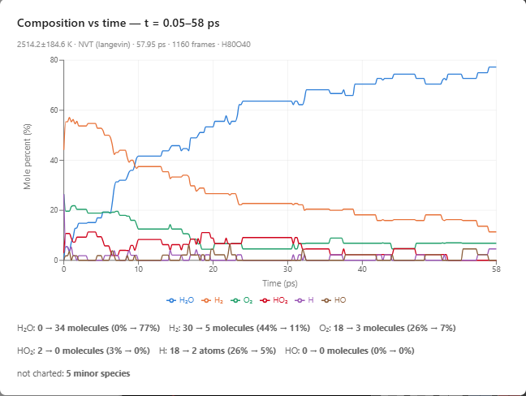
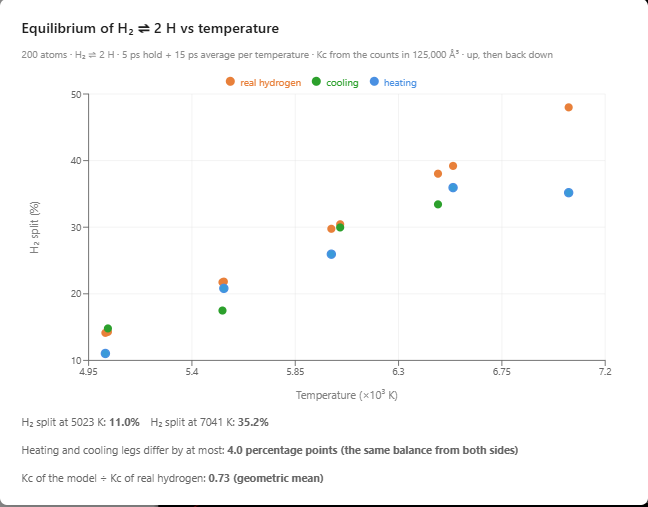
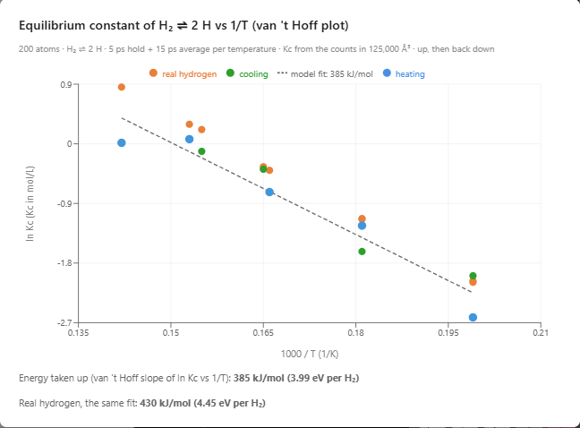
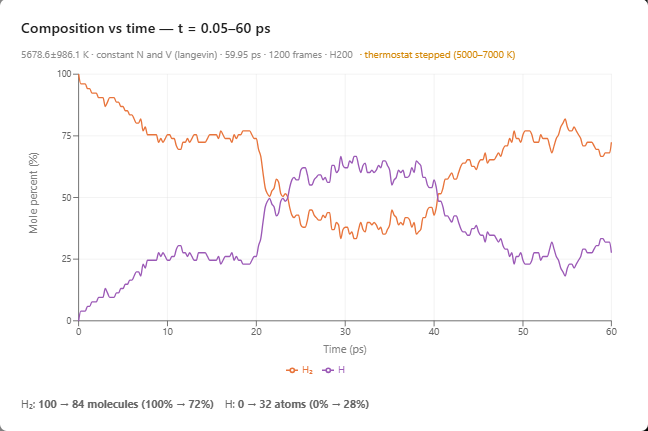

Reactive Molecular Simulations of Chemical Reactions
Watch bonds break and form, and investigate reactions and chemical equilibrium with an AI agent.
A chemical equation such as 2 H2 + O2 → 2 H2O lists what goes in and what comes out. What happens in between, which bond breaks first and which short-lived fragments carry the reaction forward, is hard to show on paper. In a reactive molecular simulation, bonds break and form as the atoms move, so the reaction happens in front of the student. AIMS runs such simulations in a web browser, and an AI agent sets up the experiments: a student asks a plain-language question, and the agent runs the reaction, counts the molecules of every kind as they form and disappear, and posts the measured data in the chat as a live chart. In the window below, hydrogen and oxygen at 2500 K react to form water. Press Play and watch water molecules form.
Hydrogen and oxygen at 2500 K, started by 24 free hydrogen atoms. About half of the water forms in the first 10 ps.
Bonds That Can Break
Most molecular simulations, including most of the others on this site, hold each bond between a fixed pair of atoms for the whole run. Molecules can move, spin, and vibrate, and their chemistry stays the same. A reactive force field computes the bond order of every pair of nearby atoms from the distance between them at every step, so a bond weakens as its atoms move apart and a new bond grows as two atoms approach. The best-known force field of this kind is ReaxFF, by van Duin, Dasgupta, Lorant, and Goddard, which is widely used to simulate combustion and other reactions. AIMS uses a simplified force field of the same kind. Its energies were checked against measured ones: breaking the bond of a hydrogen molecule takes 4.54 eV in the model and 4.52 eV in measurements, and the energies of seventeen steps in the burning of hydrogen lie within 0.2 eV of the measured reaction energies. The atoms carry no partial charges. That is the setting in which the force field was fitted, and real H2 and O2 molecules are neutral. Real water molecules carry partial charges that attract one another; at these temperatures water is a gas, and that attraction matters little.
Running Experiments by Asking
AIMS is an AI-native environment. Running the reaction, counting the species, changing the temperature or the size of the box, and plotting the results are the agent's work. A student asks "does it reach the same balance from both sides?", and the agent recognizes the intent, configures the lab, runs the experiment, and posts a live chart of the results in the conversation.
Open the three examples from the Examples menu (Chemistry, Chemical Reactions), open the chat, and type the prompts below.
Be patient. Every femtosecond is computed in your browser. Most of a reaction happens within one to a few minutes of Play, a full run in the chat takes several minutes, and a sweep through several temperatures takes about half an hour. The chat of each example already holds the results of the prompts below.
Hydrogen and Oxygen Reaction
- The reaction — press Play, then "Plot the reactants and products over time."
Methyl Radicals to Ethanes
- The reaction — press Play, then "Plot the reactants and products over time."
Hydrogen Dissociation Equilibrium
- Equilibrium — press Play, then "Plot the reactants and products over time."
- From both sides — "Heat it from 5000 to 7000 K and cool it back down. Does it reach the same balance from both sides?"
- Heating — "Let it settle at 5000 K, then jump the thermostat to 7000 K, then back to 5000 K, 20 ps each. Show how the mix responds."
- Squeezing — "Squeeze the box from 50 Å to 35 Å at 6000 K, then let it back out, 20 ps each. Does the mix shift?"
A Chain Reaction: Hydrogen Burns
A mixture of hydrogen and oxygen can sit for a long time without reacting, because an H2 molecule that hits an O2 molecule has to break strong bonds before anything new can form. A spark or a flame starts the reaction by supplying a few free atoms. The lab holds 28 H2 and 20 O2 molecules in a box 21 Å on a side at 2500 K, with 24 free hydrogen atoms in the role of the spark: 120 atoms, enough to make 40 water molecules. A free hydrogen atom joins an O2 molecule to make HO2 or splits it into OH and O, and these fragments attack H2 and pass the hydrogen along. Chemists call this a chain reaction, and the reactive fragments that carry it are radicals.
In the run shown in the chat, the first water molecule appeared at 0.1 ps. There were 9 water molecules at 5 ps, 20 at 10 ps, 28 at 25 ps, 31 at 40 ps, and 34 by the end at 58 ps. HO2 and OH appeared and disappeared along the way. Water formed fastest in the first 10 ps and then more slowly as the radicals ran low: without radicals, the remaining H2 and O2 molecules rarely react with one another. At the end, two free hydrogen atoms were still at work, with five H2 and three O2 molecules left. This run is typical: in 24 runs we tried, the median was 34 of the possible 40 water molecules within about 60 ps, 17 runs made 32 to 38, and the full range was 18 to 38. The box is far denser than a flame, so the times describe this box. The sequence of events is the one a chemistry textbook describes for burning hydrogen.

Two Radicals Make One Molecule
A methyl radical, CH3, is a carbon atom with three hydrogen atoms and one unpaired electron. When two methyl radicals meet, their unpaired electrons pair up into a carbon–carbon bond, and the result is ethane: 2 CH3 → C2H6. Reactions like this one end radical chains in flames and in the atmosphere. The second example packs 16 methyl radicals into a box of 15 × 15 × 10 Å, about 12 mol/L, at 365 K. The reaction needs no spark: the first ethane formed within 0.05 ps, five had formed by 1.4 ps, the sixth and seventh at about 2.7 and 3.6 ps, and the eighth and last at about 8.6 ps. No other species appeared. The first ethanes probably formed quickly because many radicals started next to a partner, and the last two radicals had the farthest to travel.
The thermostat of this example rescales the speeds of the atoms at every step and adds no randomness, so pressing Reset and then Play reproduces the same run exactly. The hydrogen examples use a thermostat that gives the atoms random kicks, and every run of them is different.
Chemical Equilibrium
Many reactions run both ways at once. Hydrogen molecules split into atoms, H2 → 2 H, and free atoms that meet join again, 2 H → H2. The third example holds 100 H2 molecules, 200 atoms, in a box 50 Å on a side at 6000 K. Press Play in the window below. At first only splitting happens, because there are no free atoms to join. As free atoms build up, they meet more often, until joining keeps pace with splitting. From then on the mix stays about the same, even though single molecules keep splitting and forming. That balance is chemical equilibrium, written H2 ⇌ 2 H.
100 H2 molecules at 6000 K. About a quarter of the atoms are free once the gas has settled, within about 10 ps.
In the run shown in the chat, the gas settled after about 6 ps. From 10 ps on, the number of free atoms ranged from 36 to 72 and averaged 52, about 26% of the atoms. The number moves up and down because only a few dozen atoms are free at any moment. The equilibrium constant of real hydrogen, computed for an ideal gas from its partition functions and its measured bond energy, gives about 30% at the same temperature and density.
Free atoms that meet a molecule also swap partners, H + H2 → H2 + H, which leaves the counts the same. This is often called the simplest chemical reaction. Eyring and Polanyi computed its energy landscape in 1931, the first such landscape computed for a chemical reaction. Halfway through the swap the three atoms sit in a line at the top of an energy barrier, 0.42 eV high for real hydrogen and 0.44 eV in the AIMS model.
The Same Balance from Both Sides
The test of an equilibrium is that the system reaches the same balance whether it starts with too many molecules or with too many atoms. The second chat turn asks the agent to heat the gas from 5000 to 7000 K in steps of 500 K and to cool it back down through the same temperatures. At each step the agent holds the temperature for 5 ps and then averages the counts for 15 ps. On the way up, the gas arrives at each temperature with too few atoms, and splitting catches up. On the way down, it arrives with too many, and joining catches up.
| Temperature | Split, heating | Split, cooling | Real hydrogen |
|---|---|---|---|
| 5000 K | 11.0% | 14.8% | 14% |
| 5500 K | 20.8% | 17.5% | 22% |
| 6000 K | 25.9% | 30.0% | 30% |
| 6500 K | 35.9% | 33.4% | 39% |
| 7000 K | 35.2% | — | 48% |
At every temperature the heating and cooling legs agree within about 4 percentage points, and the heating leg is higher at some temperatures and the cooling leg at others, as expected from the scatter of a few dozen free atoms. The model splits a little less of the hydrogen than real hydrogen does, most at the hot end. The 7000 K point came out slightly below the 6500 K point, within the scatter of a single point.
The agent also computes the equilibrium constant Kc = [H]2/[H2] at every temperature from the counts and the volume of the box. Kc rose from about 0.07 and 0.14 mol/L on the heating and cooling legs at 5000 K to about 1 mol/L at 6500 to 7000 K, and the model's Kc is about 0.73 times that of real hydrogen. The second chart of the turn, on the right below, plots the natural logarithm of Kc against 1000/T. The van 't Hoff equation says this plot is a straight line, and its downward slope times the gas constant is the energy the reaction takes in: 385 kJ/mol for the model. Real hydrogen, fitted the same way over the same temperatures, gives 430 kJ/mol, close to the 436 kJ/mol it takes to break the H–H bond.


Le Chatelier's Principle
Le Chatelier's principle says that a system at equilibrium, disturbed by a change in its conditions, shifts in the direction that partly counters the change. The third and fourth chat turns disturb the gas in two ways.
Heating. The agent holds the gas at 5000 K for 20 ps, steps the thermostat to 7000 K for 20 ps, and steps it back to 5000 K for 20 ps. The number of free atoms settles at about 30 (15% of the atoms), climbs to about 88 (44%) after the step up, and returns to about 31 (15%) after the step down. The chart below counts each free atom and each molecule as one particle (mole percent), so the same balances read about 26%, 61%, and 27% there. Each shift is half done about 1.2 ps after the step. Splitting a molecule takes in energy, so a hotter gas holds more atoms. Returning to 5000 K brings back the old balance, so the balance depends on the conditions alone. The thermostat holds each temperature, so this run cannot show the gas countering the heating: in a gas left to itself, splitting would take up part of the added heat and slow the warming.

Squeezing. At 6000 K throughout, the agent shrinks the box from 50 Å to 35 Å on a side, a third of the volume, for 20 ps and then lets it back out. The pressure jumps from about 96 MPa, or 950 bar, to 280 to 300 MPa. The number of free atoms falls from about 48 (24% of the atoms) to about 33 (16%), half of the shift within 0.5 ps, and climbs to about 55 (27%) when the box is let out. Two atoms that join make one molecule, so pairing up leaves fewer particles to hit the walls, and the squeezed gas shifts toward the side with fewer particles. Squeezing at a fixed temperature leaves Kc the same: it read about 0.40, 0.49, and 0.55 mol/L in the three stretches, equal within the scatter. Right after the squeeze every concentration triples, the ratio [H]2/[H2] triples with them, and atoms pair up until the ratio is back at Kc. Heating moves the balance because it changes Kc. Squeezing moves the balance while Kc stays the same.
Why 6000 K?
Real hydrogen at the ordinary pressure of 1 bar is already 30% split at 3500 K. The squeeze explains why the lab needs 6000 K: the box is packed to about 1000 bar, and a dense gas favors the side with fewer particles. At 1 bar and 3500 K, the same 100 molecules would need a box about 400 Å across, the atoms would meet a few hundred times less often, and the gas would take an estimated nanosecond or more to settle, too long to watch in a browser. The lab packs the gas tightly so that it settles within a minute or two of Play, and heats it to make up for the pressure.
What the Simulations Produced
The simulations were given the forces among atoms. Everything below came out of them:
- A chain reaction — 24 free hydrogen atoms start the burning of hydrogen in oxygen, which runs through HO2 and OH and makes a median of 34 of the possible 40 water molecules in 24 runs.
- Radical recombination — 16 methyl radicals pair into 8 ethane molecules within 9 ps, with no spark.
- Equilibrium from both sides — hydrogen heated and cooled through 5000 to 7000 K reaches the same balance within about 4 percentage points from both directions, a little below real hydrogen.
- The van 't Hoff energy — the slope of ln Kc against 1/T gives 385 kJ/mol, against 430 kJ/mol for real hydrogen fitted the same way.
- Le Chatelier's principle — heating from 5000 to 7000 K raises the share of free atoms from 15% to 44%; squeezing to a third of the volume lowers it from 24% to 16% while Kc stays the same.
Conclusion
This article uses chemical reactions to illustrate a new way to learn science: students converse with an AI agent that turns a plain-language question into a molecular dynamics experiment and hands back measured data. A chemical equation, a chain reaction, and chemical equilibrium become things students watch and measure for themselves in a browser: which fragments carry hydrogen to oxygen, how a gas reaches the same balance from both sides, and how that balance shifts when the gas is heated or squeezed. By pairing a physically grounded reactive simulation with an AI that can set it up and run it, AIMS turns a student's curiosity into a genuine scientific investigation of the reactions they read about in a chemistry textbook.
← Back to AIMS